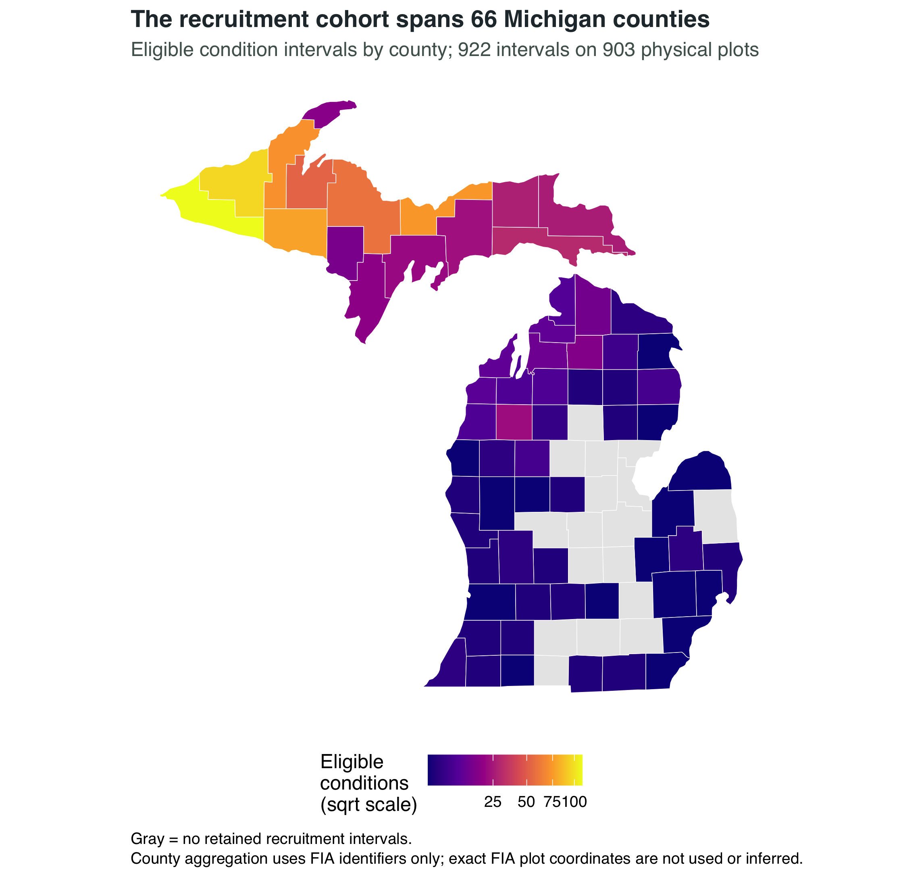
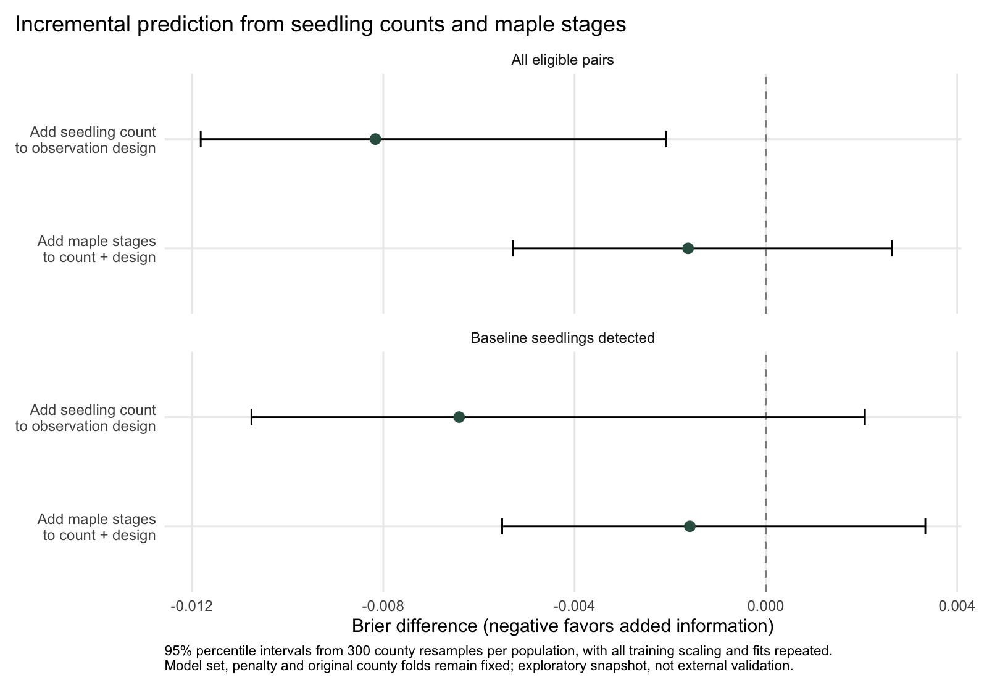

Maps and exploratory visuals
Spatial context, size-class evidence, and the path to the recruitment study
County-safe maps and earlier exploratory figures from the Canopy to Cohort FIA workflow.
Michigan · county-safe FIA geography · exploratory visuals
Maps explain where the evidence comes from; they do not turn a sample into a statewide estimate.
This page brings the project’s visual evidence together. The current recruitment study is shown first. The earlier maps and charts remain because they explain the sample, separate FIA size classes, and show how the research question changed. They are labeled as foundation or pilot evidence where they are not part of the recruitment endpoint.

The current recruitment cohort is mapped by county, never by exact FIA plot location.
Current recruitment study
The primary analysis retains 922 baseline to follow-up condition intervals on 903 physical plots across 66 counties. The map shows where the retained sample is distributed, not the probability of recruitment in each county. Counties with more intervals are darker because they contribute more observations; that is sample support, not a county ranking.
The two current result figures belong to the recruitment report: the count gradient shows recorded entry by baseline seedling count, and the paired Brier plot compares added information on matched observations. Their interpretation depends on the held-out county design and the caveats in the full recruitment report.


Earlier foundation: composition and size classes
These figures come from the earlier cross-sectional analysis of 1,457 forest conditions in 78 counties. They are useful context for understanding which species and size classes were present before the project moved to repeated visits. They are not estimates of the current recruitment endpoint.
Sample composition

This chart describes the composition of the analyzed sample. It does not imply that basal-area contribution is a statewide FIA estimate or that larger maple basal area measures recent regeneration.
Separating established trees from seedlings

This screen motivated separating established trees, saplings, and seedlings. The later recruitment study asks a different question by using the next-visit recorded sapling entry as its endpoint.
Earlier detection pilot and spatial summaries
The detection pilot followed whether a seedling tally was present at both visits. That remains a supporting analysis because a missing later tally is not the same as failed recruitment. Its repeated-transition figures are available on the detection pilot page.
County-level pilot context

The earlier sample-support map used a different cohort and denominator than the current recruitment map. Keeping both visible makes that change explicit.


The two county-gap figures are descriptive summaries of the earlier detection pilot. They are not county rankings, statewide rates, or maps of biological regeneration failure. The county identifier is the only spatial link used; exact FIA plot locations are not available in the public data and are neither used nor inferred here.
Earlier model evidence
The original cross-sectional model and its diagnostics remain available for technical review. They document the model foundation, but they should not be read as the answer to the current recruitment question.


The current recruitment report uses a separate fixed benchmark sequence, county-held-out validation, and a distinct recorded-entry endpoint. Keeping the old model figures here preserves the analytical history without blending its associations with the new result.
How to read the visual record
- Current recruitment evidence: the county-support map, count-gradient figure, and paired model-comparison figure. These correspond to the 922-pair recruitment analysis.
- Foundation evidence: species composition and the earlier size-class screen. These helped define the ecological question.
- Detection-pilot evidence: repeated tally transitions, county-gap maps, earlier model effects, and diagnostics. These describe observation changes, not individual seedling survival or sapling recruitment.
The research direction records why the project moved from detection loss to sapling recruitment. The full recruitment report contains the primary estimates, uncertainty, methods, and limitations.